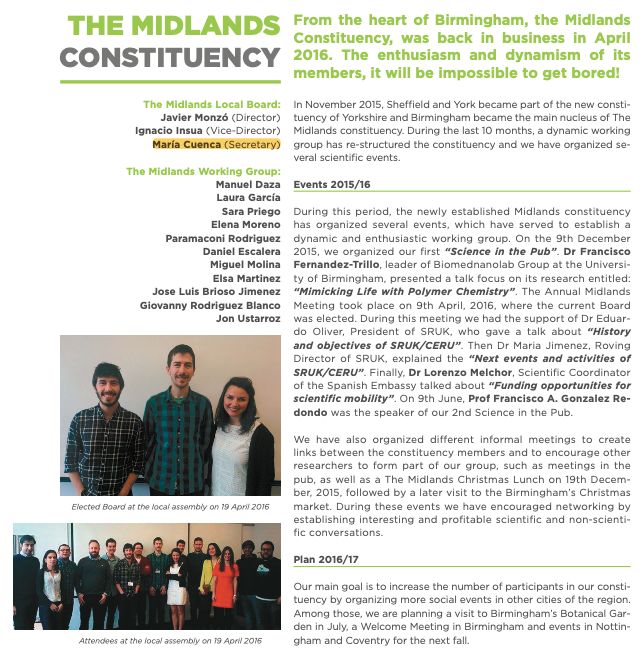

Maria Cuenca-Cambronero
Outreach
TV3 inverview
In August 2025, we had the opportunity to give an interview on TV3, where we highlighted the crucial role that ponds play in supporting biodiversity. Despite their importance as biodiversity hotspots and providers of key ecosystem services, ponds remain largely overlooked in conservation policies and lack specific protective measures. This leaves them particularly vulnerable to the pressures of climate change, land-use change, and human activities, which are causing many of these ecosystems to disappear at an alarming rate.
Through this interview, we hoped to raise awareness among the general public and policymakers about the urgent need to recognise and protect ponds as key elements of our natural landscapes. The interview formed part of the dissemination efforts of the PONDERFUL project
If you are interested to watch the entire interview, here is the link.


High School visit
For the International Day of Girls and Women in Science 2024, I had the pleasure of sharing this experience with my sister, an architect, another discipline where women remain underrepresented. Together, we presented our work and career paths to an audience of young girls and boys who were in the process of deciding their future studies. Unsurprisingly, many of the girls were leaning towards medicine and care-related fields, while the boys were more inclined towards engineering. Through our stories, we hoped to provide inspiring examples of women leading in two areas where female representation is still scarce: science and architecture.


The European night
 The European Research Night is a public event dedicated to bringing science closer to society. Its goal is to showcase research, innovation, and the people behind it to audiences of all ages in an engaging and accessible way. In 2023, I had the opportunity to participate as an invited speaker, where I introduced the fascinating world of ponds under the framework of the PONDERFUL project. During my talk, I explained why ponds, despite often being overlooked, are essential ecosystems for biodiversity, climate change mitigation, and ecosystem services. I also highlighted the multiple benefits of their preservation, not only for nature but also for people, emphasizing how these small water bodies can play a big role in building more resilient landscapes.
The European Research Night is a public event dedicated to bringing science closer to society. Its goal is to showcase research, innovation, and the people behind it to audiences of all ages in an engaging and accessible way. In 2023, I had the opportunity to participate as an invited speaker, where I introduced the fascinating world of ponds under the framework of the PONDERFUL project. During my talk, I explained why ponds, despite often being overlooked, are essential ecosystems for biodiversity, climate change mitigation, and ecosystem services. I also highlighted the multiple benefits of their preservation, not only for nature but also for people, emphasizing how these small water bodies can play a big role in building more resilient landscapes.
Interviews in the newspaper
Interview 1
Within the framework of an outreach project funded by the University of Vic, I organised, together with PhD students, a series of outreach events focused on different aspects of health, ranging from small organisms in freshwater systems to human health. These activities concluded with a final dissemination event in which three international researchers (from Switzerland, Italy, and the UK) presented their work alongside PhD students. In this interview, from L'Apunt, I explained the importance of these events and their visibility for Science and the Universisty.
Interview 2
During the Ecological Transfer Workshops organised by the University of Vic, I was invited as a speaker to provide my perspective on ecological issues and knowledge transfer to stakeholders and managers. I emphasised how challenging it can be to transfer scientific knowledge to stakeholders with primarily economic interests, such as farmers and agricultural producers.
Interview 3
The local newspaper of Osona, El9Nou published an interview on the social benefits provided by ponds and small water bodies. During the interview, we highlighted the fundamental role of these small ecosystems, which provide numerous services to society, such as water for livestock, recreation, and both mental and physical well-being. In addition, we highlighted that pond ecosystems provide habitats for numerous emblematic and protected species and support high levels of biodiversity.


SRUK association
Between 2015 and 2017, I was a member of the local board of the SRUK organisation, as secretary of the Midlands constituency, based in Birmingham. SRUK-CERU is a non-profit organisation which brings collaborative opportunities between UK and Spanish researchers. I led networking meetings, symposia, and outreach activities for non-specialist members of the public.
Some of the activities we developed in the group were, for instance, the guided visit of the Botanical Garden of Birmingham, where I was the guide of the visit
We also organised different events to meet the members of the different constituencies in the UK, to integrate collaboration and synergies between the scientific groups of other institutions
Pint of Science
“Pint of Science Spain” is a non-profit, volunteer-run initiative that brings science to the general public in a relaxed, accessible, and engaging environment. This event will take place the 18, 19 and 20 of May 2026